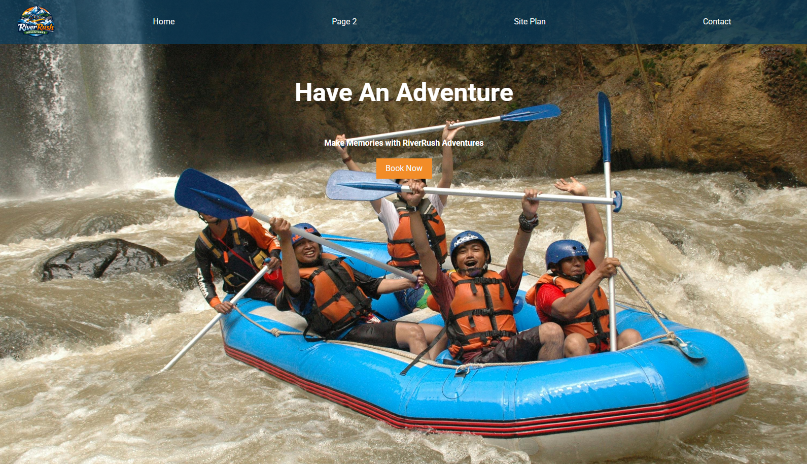
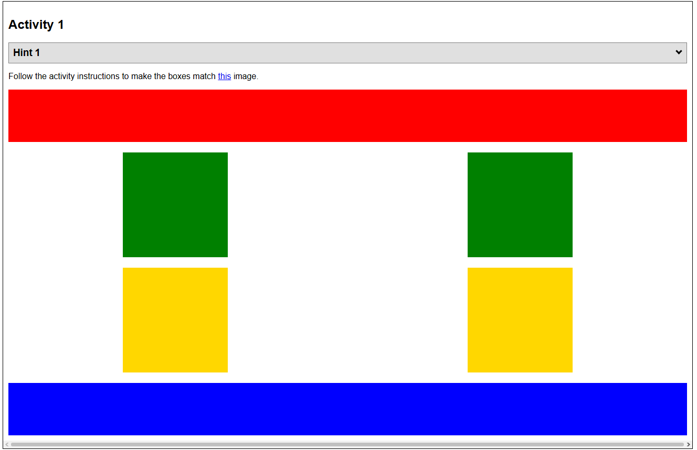
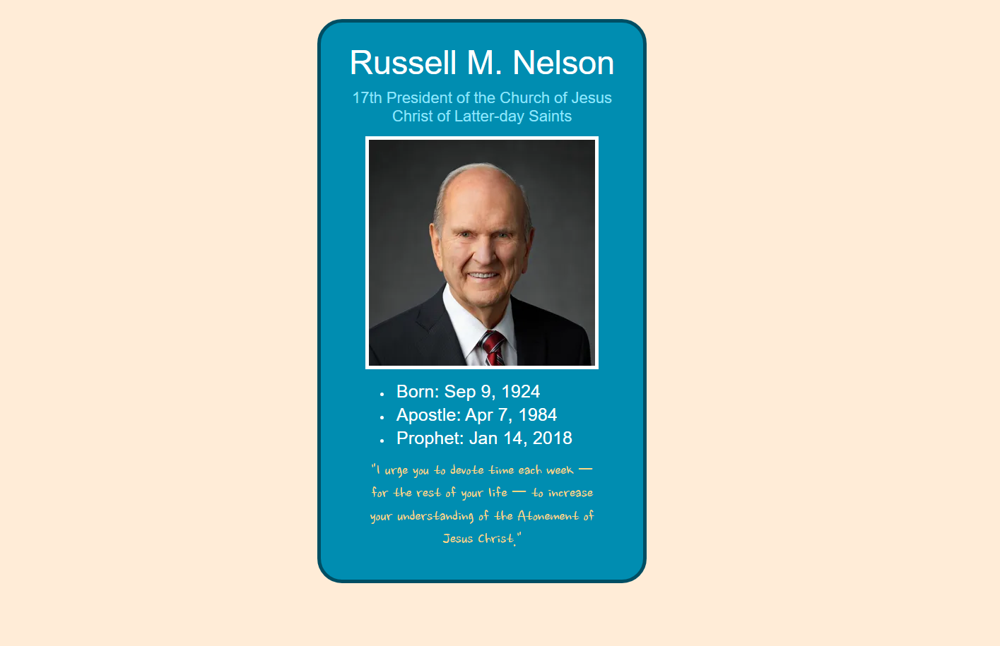
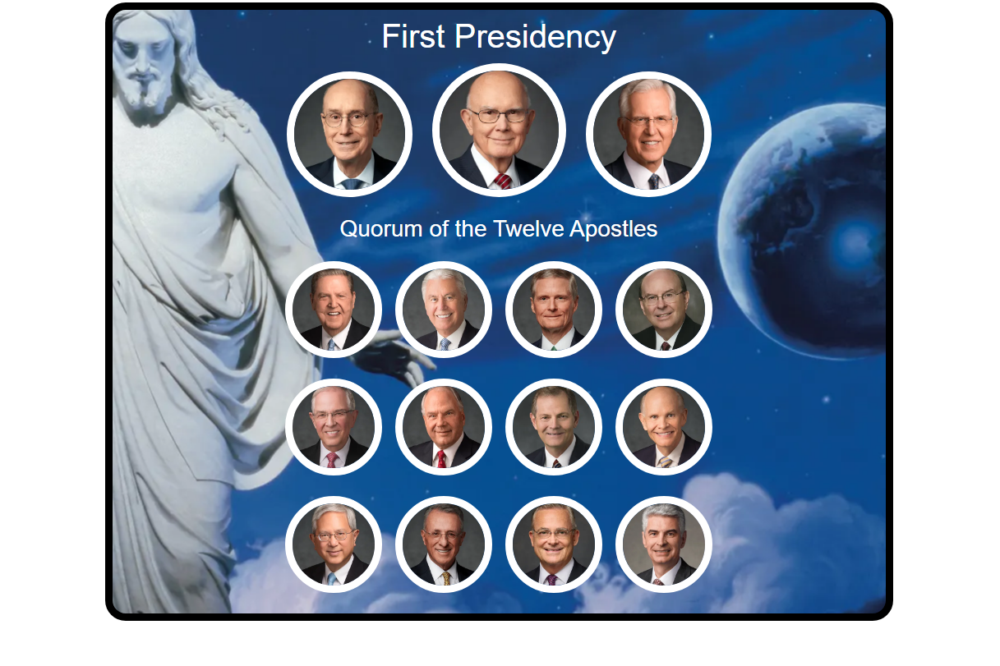
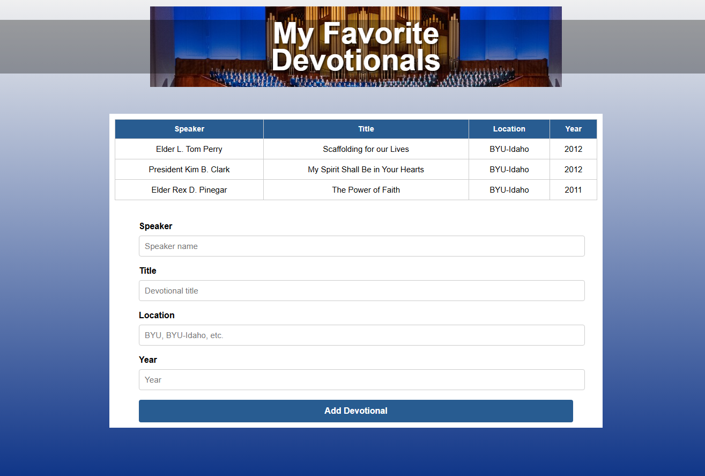
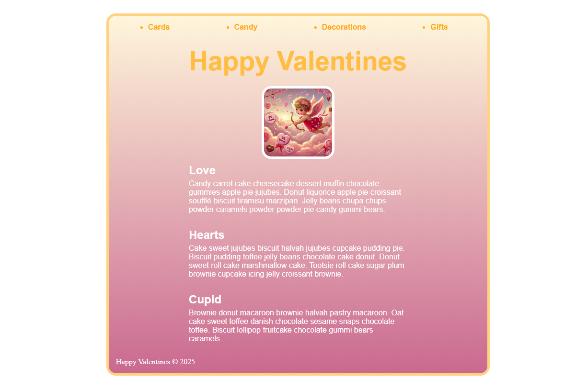
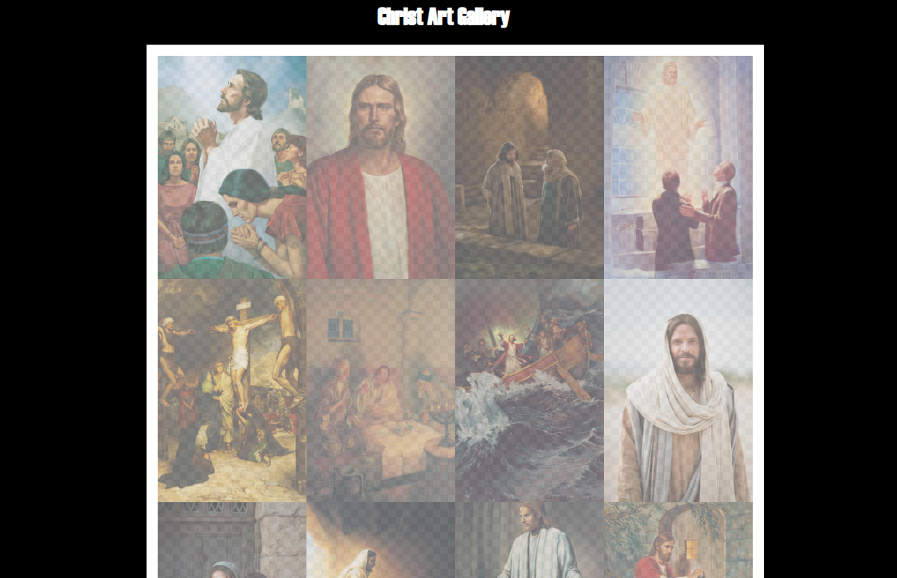
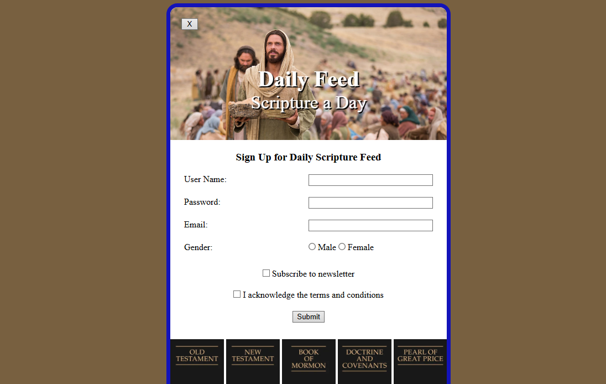

Country Flags CSS
This project recreates different country flags using only HTML and CSS. By using div elements, colors, positioning, and layout techniques such as flexbox or grid, each flag is constructed without images.

White Water Rafting Landing Page
This project involved creating a landing page for a fictional whitewater rafting company using HTML and CSS. The goal was to design a visually engaging webpage that introduces the company, highlights rafting adventures, and encourages visitors to learn more or book a trip.

Positioning Activity
This activity focused on positioning shapes using CSS to better understand how elements are placed and arranged on a webpage.

Prophet Card
I created a stylized card for Russell M. Nelson using HTML and CSS. The activity focused on structuring the content with HTML and applying CSS to design a clean card layout. The card displays information about President Nelson while practicing webpage layout, styling, and visual organization.

Apostle Spotlight
I created a spotlight webpage highlighting members of the Quorum of the Twelve Apostles and the First Presidency. Using HTML and CSS, I organized portraits of the apostles into a structured layout and styled the page with a themed background and circular image frames.

Devo Table
I created a webpage that displays a table of my favorite devotionals along with a form that allows users to add new entries. The table organizes information such as the speaker, devotional title, location, and year for talks given at Brigham Young University–Idaho devotionals.

Valentine's Card
I created a themed Valentine’s webpage using HTML and CSS. The page features a navigation menu, a festive header for Valentine's Day, and styled content sections titled “Love,” “Hearts,” and “Cupid.” I also included a decorative image and used color gradients.

Christ Gallery
I created a gallery-style webpage that displays Christ art! Using HTML and CSS, I organized multiple images into a structured grid layout to create a clean Christ Art Gallery.
